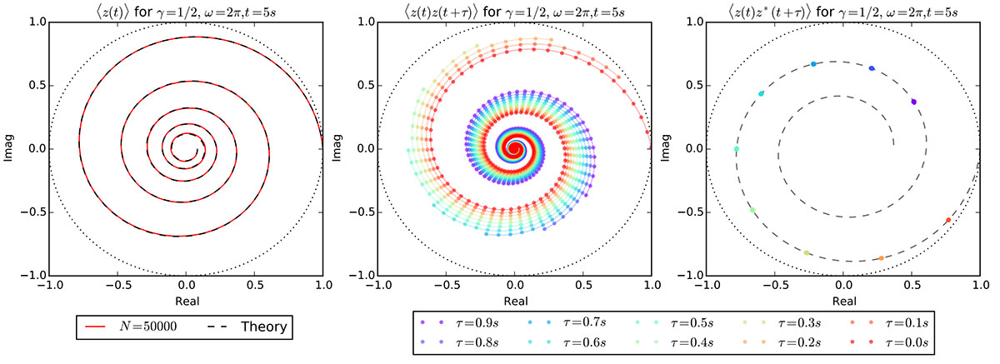

The Kubo Oscillator
A shift in gear towards stochastic calculus
I'll be honest: this post was made just to show of one of my favourite plots. I'll put it at the end, because without an introduction it really doesn't make too much sense.
Firstly, a terrifying brief (and thus completely inaccurate) introduction to stochastic systems: A stochastic system is one in which the outcome of an individual system is unpredictable due to the effect of randomness. Brownian motion (the motion of a particle being jostled around by other particles) is the classic example of this. However, even though individual realisations might have wildy varying outcomes, we can work with ensembles of systems, to predict their properties.
In this scenario, let us play with the idea of a particle travelling round and round in a circle, but is being randomly jostled (but constrained to circular motion). The question then becomes, if we have a large number of these particles, what can we say, for example, about their average position?
Forgive the math, but for this to go anywhere, we need to formalise. I won't do the derivations here, but I will copy and paste relevant equations out of my assignment. If we start with the Ito equation $$dz = \left[ (i\omega - \gamma) dt + i\sqrt{2\gamma} dW \right], z$$ we can move to the Stratonovich equation $$dz = i \omega z dt + i z \sqrt{2\gamma} dW.$$ From here, we can take the stochastic mean $$\langle{z(t)}\rangle = \alpha \exp((i\omega - \gamma) t),$$ and, if we introduce time correlation, can find that $$\langle {z(t) z(t+\tau)} \rangle = \alpha^2 \exp\left[(i\omega - \gamma)(2t + \tau) - 2\gamma t \right].$$ The takeaway message from these equations is that, as $t$ increases, the mean values spiral into the center (thanks to the $\gamma$ term).
So, we can write some C++ code, use the semi-implicit method to simulate a hundred thousand particles starting at the same point, and then take their average position as a function of time. Hopefully it agrees with the theoretical predictions above!
Huzzah! The black solid line in the left hand plot, and the black dashed line in the right hand plot, are the equations from above, plotted. The coloured lines and points are our values from the simulation. And they agree perfectly! I think that plot represents the high point of the computational physics course in which I did it.